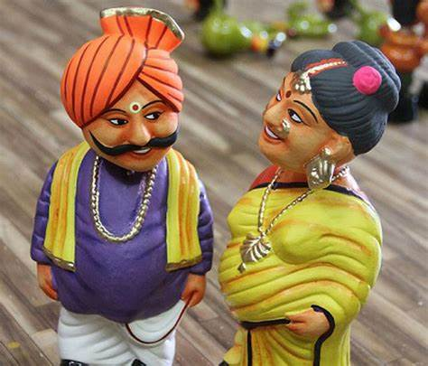
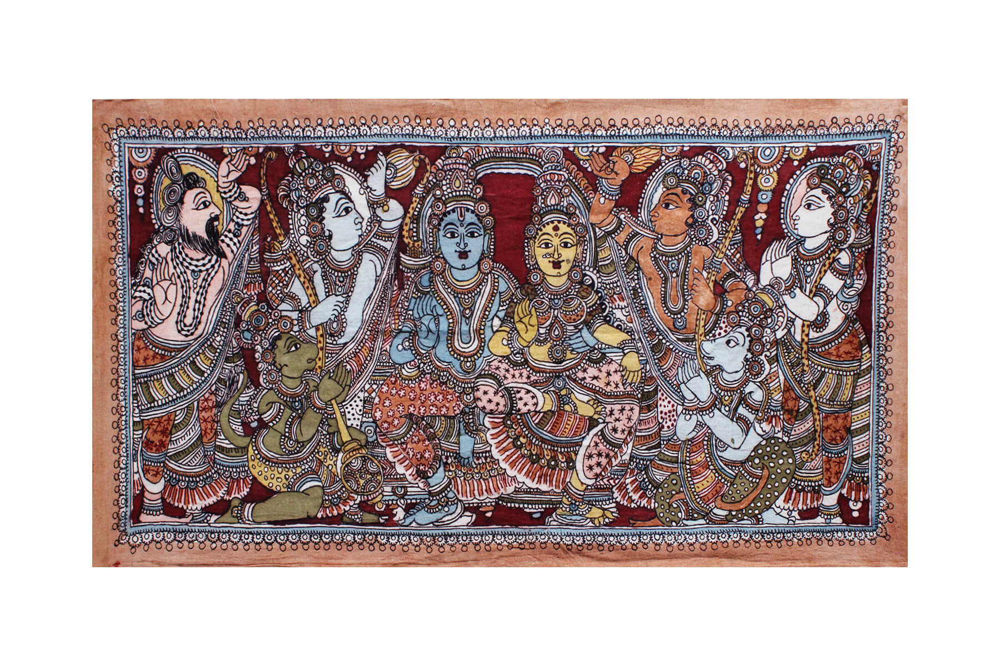
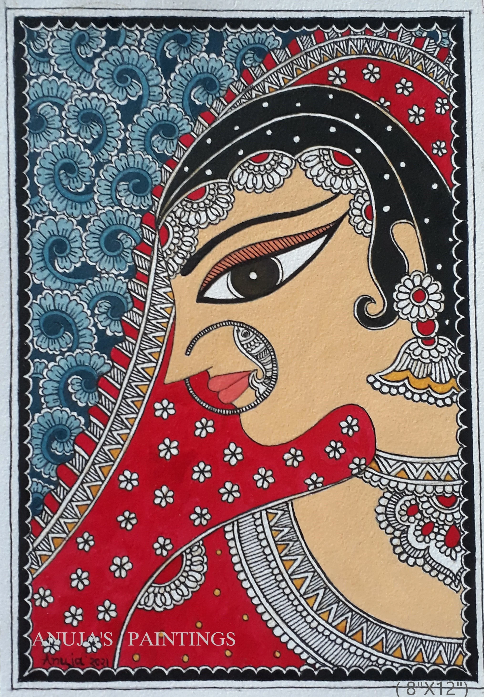
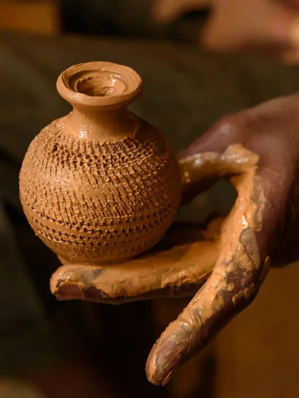

Art and craft of Andhra Pradesh
Andhra Pradesh is renowned for its rich and diverse art and craft . Here, we highlight some of the most celebrated art forms that showcase the state's vibrant cultural heritage.

Kondapalli Toys:
Traditional handcrafted wooden toys from the nearby Kondapalli region are known for their vibrant colors and intricate designs.

Kalankari:
An art form involving intricate hand-painting on fabrics, often depicting mythological scenes and traditional motifs.

Madhubani Art:
Although more commonly associated with Bihar, Madhubani-style paintings are sometimes found in Andhra Pradesh, including Vizianagaram, depicting mythological and natural themes.
